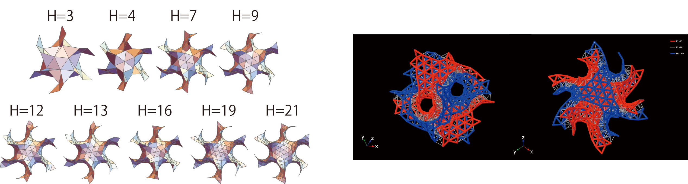

Hexagulation numbers: symmetry breaking on the gyroid surface
Tomonari Dotera & Kana Yamamoto
Interface Focus. 16, 20250098 (2026).
doi.org/10.1098/rsfs.2025.0098
Theme issue "Geometry, materials and the imagination"
A tribute to Professor Stephen T. Hyde

The regular arrangements of identical spheres on the gyroid surface have been investigated using Monte Carlo simulations of hard spheres undergoing the Alder transition. In our preceding study, we showed that these regular structures on saddle-shaped triply periodic minimal surfaces are systematically classified by the hexagulation number H, analogous to the Caspar-Klug triangulation number for icosahedral viruses. In this paper, we focus on the non-centrosymmetric regular structures that emerge when H is a multiple of three on the gyroid surface. In these cases, the space group Ia3d of the gyroid is reduced to its non-centrosymmetric subgroup I43d. By considering both inversion structures, we construct an efficient bilayer configuration that forms a truss-like structure. These physically efficient designs may provide inspiration for future applications in soft-matter science, DNA-origami nanotechnology, metamaterials, and even architectural design.